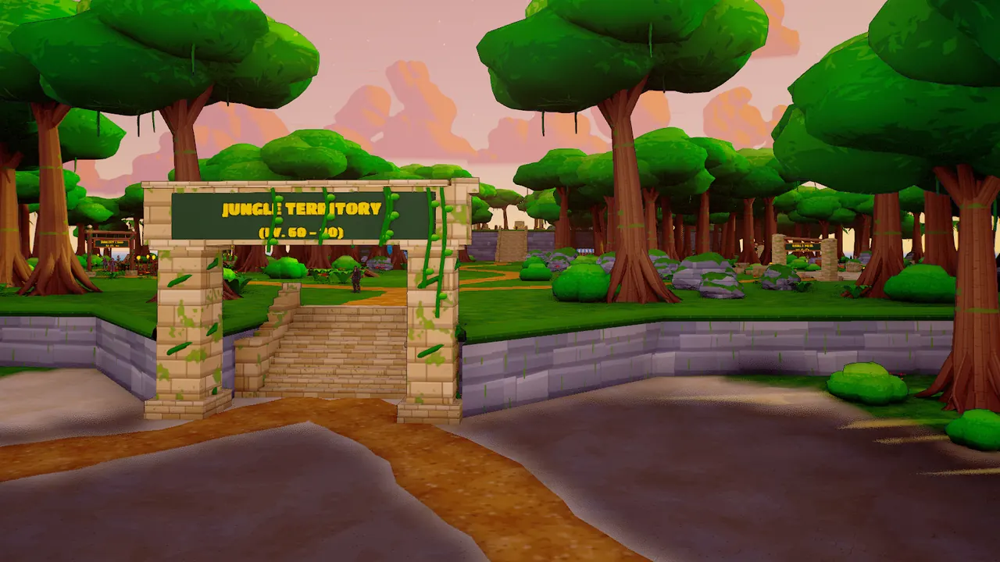
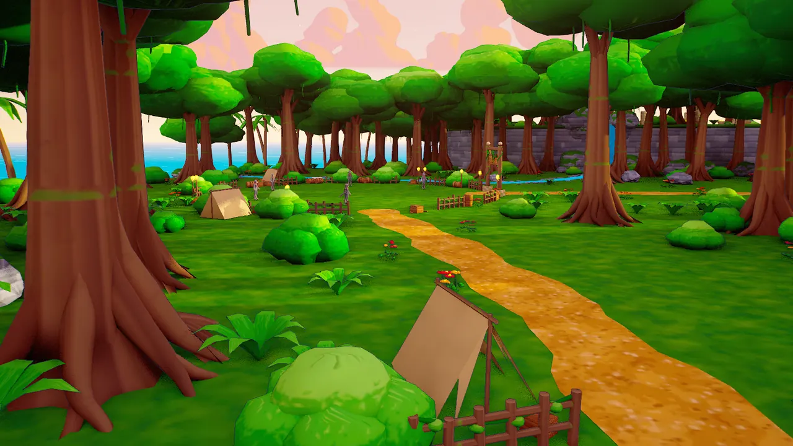
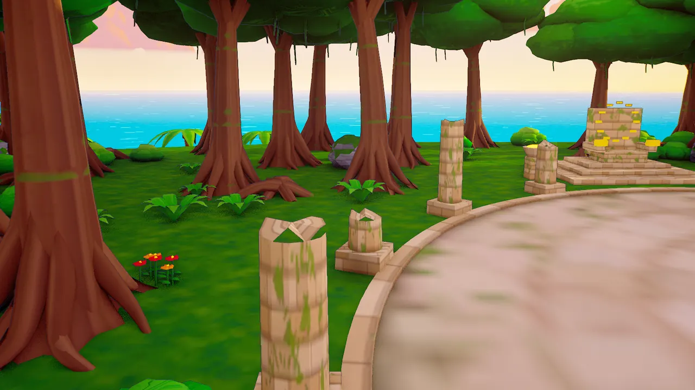

Jungle
Une jungle épaisse autour d'un ancien sanctuaire. Les Singes et les Gorilles y rôdent, et le Roi Singe garde l'arène en haut de l'escalier.
Présentation
La Jungle accueille les joueurs du niveau 60 au niveau 80. On y combat les Singes agiles et Gorilles blindés. Son boss : Roi Singe.
Missions
| Ennemi | Niveau | PV | Dégâts | Victoires demandées | Renom par victoire | Or par victoire | Renom (mission) | Or (mission) |
|---|---|---|---|---|---|---|---|---|
| Singes agiles Chasseur Tobias | 60 | 1 900 | 48 | 5 | 130 | 55 | 3 120 | 2 500 |
| Gorilles blindés Chasseur Tobias | 70 | 2 200 | 54 | 5 | 140 | 70 | 3 510 | 3 800 |
- Chasseur Tobias : Au carrefour de la Jungle.
Chaque mission demande ce nombre de victoires ; elle se relance seule dès qu'elle est finie. Les gains par victoire sont réduits si tu n'as pas encore le niveau de l'ennemi.
PV et dégâts réglés sur les appareils du jeu. Les ennemis frappent en combos : chaque coup d'un combo inflige une part de cette valeur (60 %).
Contrats de chasse
Dès le niveau 100, la mission relancée peut être un contrat de chasse, sur les ennemis de cette île :
| Ennemi | Victoires demandées | Renom | Or |
|---|---|---|---|
| Singes agiles | 10 | 6 800 | 10 700 |
| Gorilles blindés | 8 | 6 980 | 9 900 |
Boss
| Boss | Quête ouverte au niveau | PV | Renom | Or |
|---|---|---|---|---|
| Roi Singe | 80 | 12 000 | 6 500 | 5 500 |
Comment y aller
En bateau : achète-en un au chantier naval de l'île des Alizés, puis suis la flèche de la mission. Sur chaque île, le capitaine de port peut faire de son quai ton point de réapparition.
Galerie


